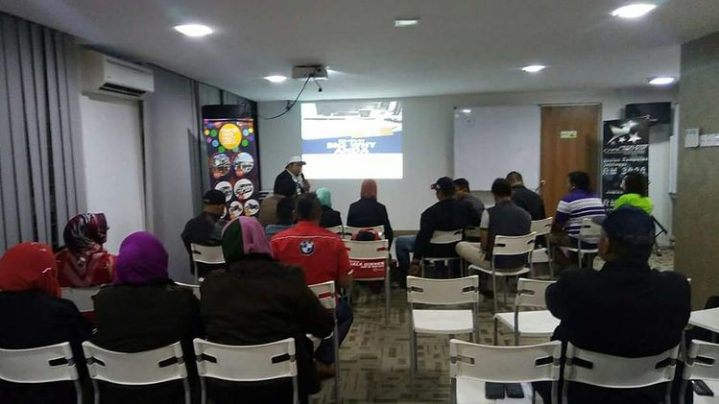
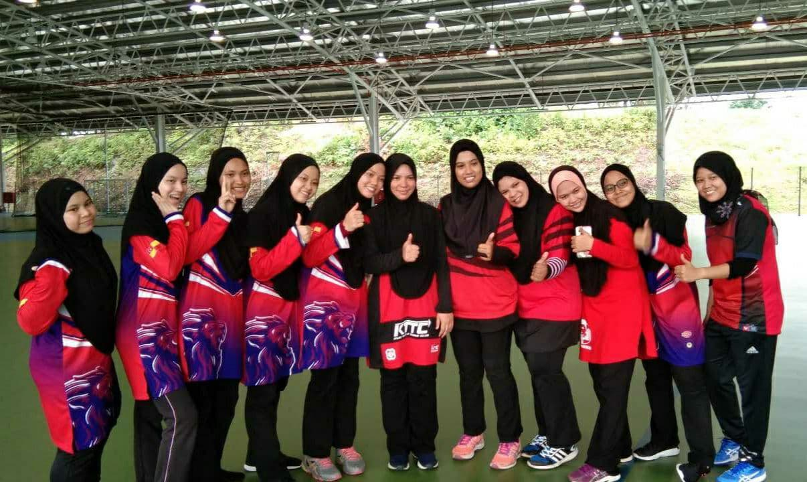
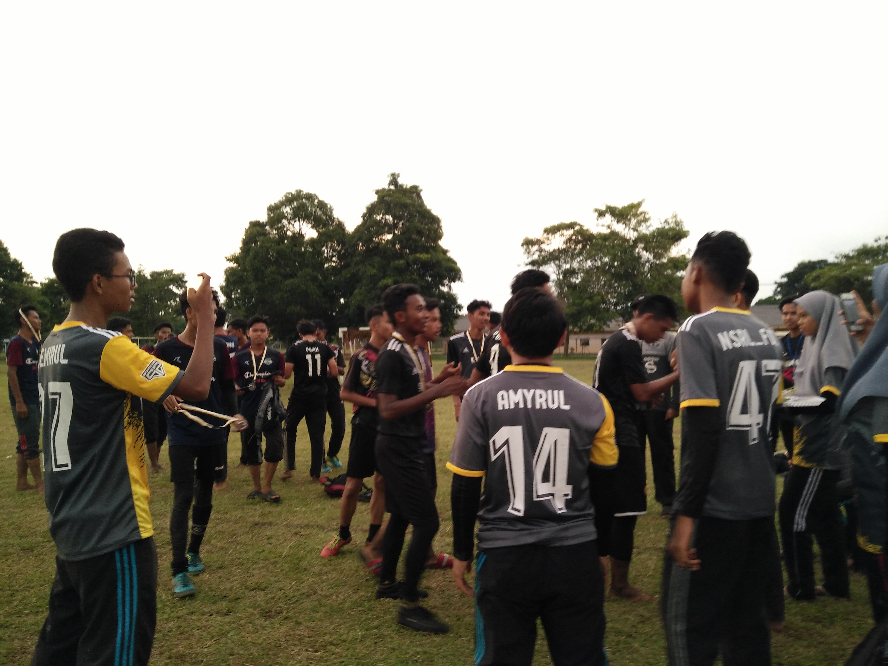

My Experience

- Business - Coaching Prospects
-
- As I finished my SPM on 2018, I followed my sister and stayed at Kuala Lumpur until before I futher my studies at UITM Kedah.
There, I started to join a business and have been actively coaching my prospect and joined events held by our Coach.
By joining the business, I managed to gain my own income and able to talk to lot of people.
Not just that, I am also able to boost my clients' confidence in joining the business and to make an income with us.
Other than that, I am also able to talk to in front a lot of people and I also have the opportunity to follow the team to all over the country and several countries for the purpose of coaching clients.
However, after I further my studies at UiTM, I had to slow down a bit and give more focus towards my studies to get and to achieve what I've been dreamed for.

- Netball Friendly Match as KUIS Students
-
- As I used to stay at Kuala Lumpur before entering to UITM, I used to be friends with the netball coach and the residences who live at my sister's residence.
- Because of that, my sister and I joined KUIS's students by playing netball and always had a friendly matches at any universities.
- Because of that, I am able to boost my own confidence in get along and have an open attitude towards anyone.
- I i was also able to learn how to make friends and communicate with older people as well as learn to have more high team spirit.
- I also learned how to control my anger and be professional in a situation even in tense times.

- Organize Futsal and Handball Matches
-
- Back then during I was in 16 and 17 years old, when I was in my secondary school in 2017 - 2018, I was a student who majored in Sport Science.
- During that time, there are an event that need to be held as "Kerja Kursus".
By that, my class decided to held a Handball Match on 2017 for the students from our school and other schools, and Futsal match was held in 2018.
- Those teams who came in first, second and third place were given some money and hamper as a token of appreciation towards the victory obtained.
- They were also got an certificate and medals.
- Through these two matches, I've learnt something as I organized and managed the matches. I've lea how to control my patient, I've learnt about how to work together in a group to make the event a success.